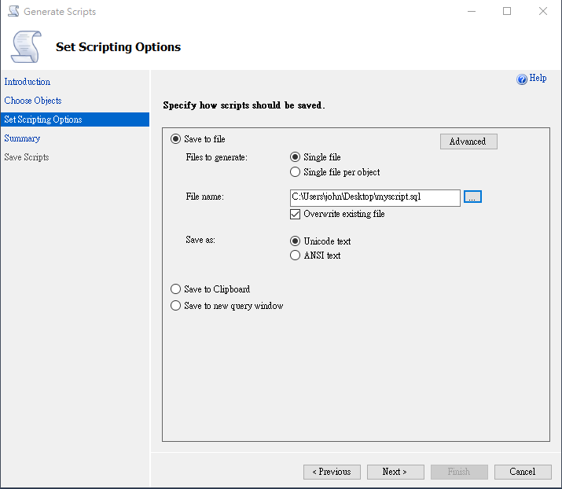
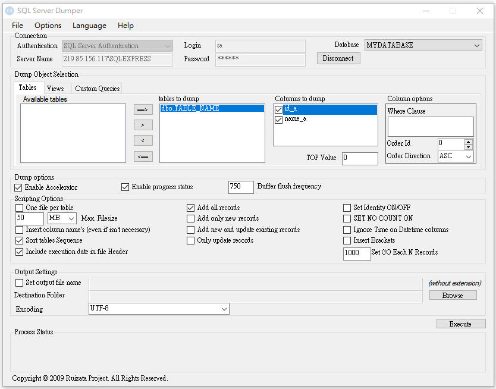

以下介紹從遠端 SQL Server 把資料匯出到本地的方法，
用「Generate and Publish Scripts Wizard」、「SSDT」、「SQLDumper」
script 的方式較能閃避因權限而被阻擋問題；
而用「Data-tier Application」、「SQL Server 匯入和匯出精靈」，
則會較常遇到因權限而被阻擋問題。
但以上五種方式沒有絕對好壞，而是看應用在什麼場合。
準備一範例
CREATE DATABASE MYDATABASE; GO USE MYDATABASE; GO CREATE TABLE TABLE_NAME ( id_a INT NULL ,name_a NVARCHAR(50) NULL ) GO INSERT TABLE_NAME VALUES (1, 'Tom'); INSERT TABLE_NAME VALUES (2, 'Bob'); INSERT TABLE_NAME VALUES (3, 'Tim');
一、Generate Scripts (Generate and Publish Scripts Wizard)
此範例示範從遠端把 MYDATABASE 資料庫以 script 方式產出，爾後利用該 script 來達到還原資料庫的目地。


每一張 Table、View、Stored Procedures 都可算是一個 object。

進階設定項目如下，其中一項常被設定項目是「Types of data to script」，
你可以設定只產生 schema script 是 data script 或兩者皆要。

產生出的 script 內容如下

二、SQL Server Data Tools (SSDT)
此範例利用 SSDT 從遠端把 MYDATABASE 資料庫以 script 方式產出，爾後利用該 script 來達到還原資料庫的目地。
現在 VS2019 已把 SSDT 整合進去了，不用獨立安裝。
在 server Explorer 裡
於 Data Connections 去連到來源 server 與目地資料庫


可設定匯出筆數上限

可選擇直接產生 script
或是產生 script 檔
使用直接產生 script 方式的內容為
小結：
SSDT 只能針對一張一張 table 去產生 script 而不能整批處理。
三、SQLDumper
利用 SQLDumper 從遠端把 MYDATABASE 資料庫以 script 方式產出，爾後利用該 script 來達到還原資料庫的目地。
SQLDumper 他幫我完成了許多工作，我非常感激他，目前還可使用，
但 SQLDumper 已不會再有人維護了，故不推薦。
下圖設定請自行參考。

一個絕版的軟體，備份檔如右 SQLDumper
四、Data-tier Application (製作 .bacpac 檔，與還原 .bacpac 檔 )
利用 Data-tier Application 對遠端的來源資料庫 (MYDATABASE) 製作 .bacpac 檔，
爾後利用該 .bacpac 檔來達到還原資料庫的目地。
針對要製作 .bacpac 檔的來源資料庫，請使用「Export Data-tier Application」選項

指定 .bacpac 檔所要儲存的路徑
進階選項可選那幾張表要被匯出

完成後，將產生一個 .bacpac 檔
接下來，還原 .bacpac 檔，來達到還原資料庫的目地。
首先，在目地端 server，對 Database 資料夾，請使用「Import Data-tier Application」選項
匯入剛所製作的 .bacpac 檔

指定還原的資料庫名稱(通常使用原來的資料庫名稱即可)，
與決定其所產生的 .mdf .ldf 檔要放在何處。


完成後，將於目地 server 產生名為 MYDATABASE 資料庫

五、SQL Server 匯入和匯出精靈
利用「SQL Server 匯入和匯出精靈」將遠端的來源資料庫 (MYDATABASE) ，直接匯到特定 server 上(不一定要在本地端)。
選擇「Export Data」選項，開啟「SQL Server 匯入和匯出精靈」


選擇資料來源型態

指定來源

選擇資料目地型態

指定目地。注意，目地資料庫 (MYDATABASE) 需存在，如沒有，請先新增一個。
可以選擇匯出所有 table，或是有條件限制匯出。

可以選擇要匯出那幾張 table，也可以細部調整 column 的映對方式。


完成後，可以發現目地資料庫裡的資料也都有了。

參考資料：